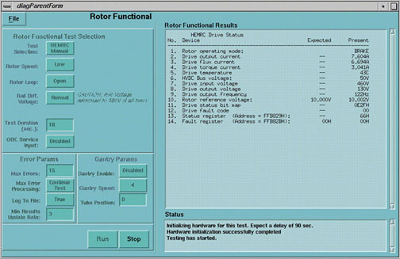

Proprietary to General Electric
Direction 5114043-800, Rev# 9
LightSpeed 3.X Service Methods (Advanced)
Proprietary to General Electric |
[SERVICE DESKTOP] -> [DIAGNOSTICS] -> [X-RAY GENERATION] -> [ROTOR CONTROL]
Illustration 1: Rotor Functional Screen

This diagnostic allows manual operation of the rotor while monitoring the operating parameters.
Run test after getting HEMRC operating errors. This does not include communication errors.
There is a 180 second delay from the start of this test to when the test can be restarted, due to a HEMIT heating issue.